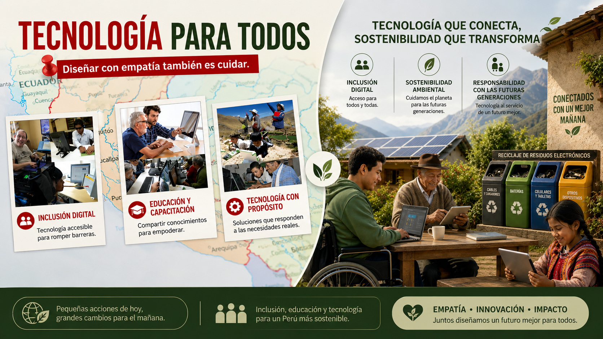

Este portafolio documenta nuestro recorrido ético a lo largo del semestre: desde la construcción de nuestra identidad profesional hasta el compromiso con las generaciones futuras y el entorno.
Basado en el concepto de Aristóteles: Telos.
Nuestro propósito es alcanzar los telos de la ingeniería de sistemas. Desarrollar soluciones tecnológicas que no solo funcionen eficazmente, sino que contribuyan al bien común, la justicia y el bienestar social.
Estas poblaciones son relevantes porque muestran quiénes pueden quedar fuera si la tecnología no se diseña bien. Las personas con discapacidad pueden verse afectadas si los sistemas no son accesibles, y los adultos mayores pueden perder independencia si no entienden las interfaces (Bozzini et al., 2021). Del mismo modo, las poblaciones rurales pueden quedarse atrás por falta de acceso (Valverde et al., 2025).
En el ámbito laboral de nuestra carrera, identificamos varias negligencias éticas que afectan directamente a las personas y al uso responsable de la tecnología. Una de ellas es la mala gestión de la seguridad de la información, ya que muchas empresas creen que al contratar servicios externos ya están protegidas, sin verificar realmente si los datos están seguros.
También observamos el desarrollo de sistemas poco accesibles, diseñados sin considerar a personas con discapacidad, lo que limita su participación y desempeño. Frente a ello, proponemos crear tecnologías más seguras, inclusivas y accesibles para todos.
audios/podcast.mp3 exista en tu
carpeta.
El profesional actuaría guiándose por su deber moral. Debería insistir en que las vulnerabilidades sean corregidas, porque proteger la información de los ciudadanos es una responsabilidad ética independiente de las consecuencias personales.
El profesional evaluaría qué decisión genera el mayor beneficio para la mayoría de personas. Desde esta perspectiva, insistir en corregir las vulnerabilidades podría justificarse porque evita posibles daños a miles de ciudadanos y protege servicios esenciales.
